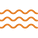
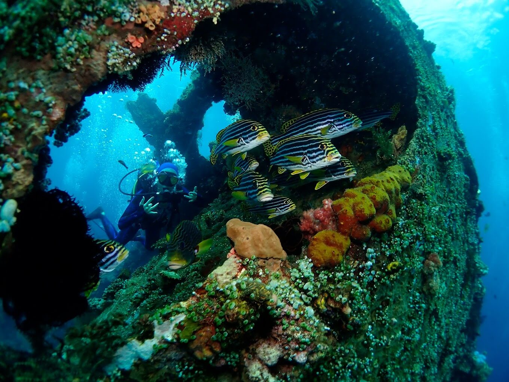

About Scuba Diving
Fun Dive / Recreational Diving



Snorkel adalah pipa yang memungkinkan kamu bernapas saat wajah berada di dalam air. Pipa ini biasanya terbuat dari plastik atau silikon.
Wet suit adalah pakaian yang terbuat dari bahan neoprene yang membantu menjaga suhu tubuh saat snorkeling di air dingin.

Fins adalah alat tambahan di kaki yang membantu meningkatkan efisiensi berenang di dalam air.
Pelampung memberikan tambahan keamanan bagi pemula atau mereka yang tidak yakin dengan kemampuan renang.
Technical Diving
Snorkel adalah pipa yang memungkinkan kamu bernapas saat wajah berada di dalam air. Pipa ini biasanya terbuat dari plastik atau silikon.
Wet suit adalah pakaian yang terbuat dari bahan neoprene yang membantu menjaga suhu tubuh saat snorkeling di air dingin.
Fins adalah alat tambahan di kaki yang membantu meningkatkan efisiensi berenang di dalam air.
Pelampung memberikan tambahan keamanan bagi pemula atau mereka yang tidak yakin dengan kemampuan renang.
Diving Location in Bali

